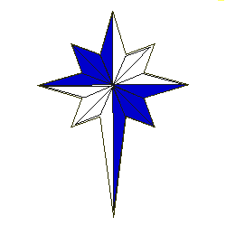
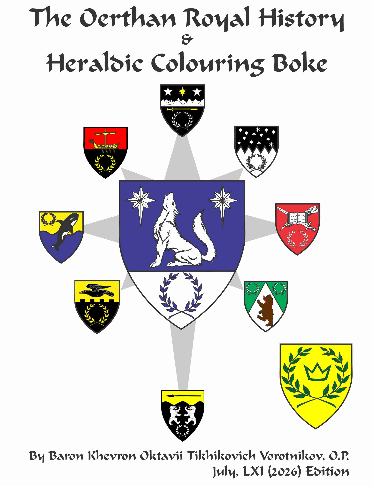

The Oertha Armorial
and Order of Precedence
Updated July 28, A.S. LXI (2026)
This is rebuilt - please check your position in the OP.Adjust window width to where the blue strip just starts on the right-- for optimal viewing.

The Arms of Oertha
Azure, a wolf sejant, head erect,
in chief two compass stars, and on a base Argent,
a laurel wreath Azure
Oertha Populace Badge

Fieldless, a compass star elongated to base quarterly azure and argent.
The Principality of Oertha is part of the West Kingdom
Modernly the State of Alaska, USA


Hans II & Elena II
81st Prince and Princess of Oertha!
Welcome!
This is, of course a work in progress and ever changing.
You can choose to follow a specific Royal Reign, past or present, on this page:
If some emblazons do not appear, refresh/reload the page once.
Armory will have names above, and blazons and award history beneath.
If you know any of these folks who have moved to other Kingdoms
Some names carry links to sites related to that individual (in blue).
Or
In Order of Precedence:
To the Royal Peers Page
To the Patents (Knight, Laurel, Pelican, Defense, Mark) Page
To the AA's Part II
To the AA's Part III
To the AA's Part IV
To the AA's Part V Page
To the AA's Part VI Page
To the AA's Part VII Page
To the Baronies of Oertha Page
Original Posting February, A.S. XXXV (2001)
Most of the information herein is based on the
Get a PDF version of this information: 
Kingdom of An Tir Roll of Arms
Kingdom of the Outlands Roll of Arms
Kingdom of Meridies Illuminated Armorial
Kingdom of the West Branch Heraldry
Kingdom of the West Royal History Roll of Arms
Groups of the Knowne World Roll of Arms
For help reading blazons and the meanings of terms, visit:
For a history of the Courts, Progress and Awards
Send comments, artwork or corrections to:
My thanks to Hirsch von Henford, Robert Rootes,
The Incipient Canton Bjarnastrond
The Canton Ynys Taltraeth (former)
See Erlenwerder (Ketchikan Group) on Facebook!
The following are current and/or former residents of the Principality of Oertha
in Order of Precedence. It is the intention of the web-author to include all
coats of arms of all the populace of Oertha. This includes persons residing
or ever having resided in Oertha, and persons having received awards
from the Coronets of Oertha.
NOTE: While care is taken to keep this site up-to-date,
the only official source of awards for Oertha and the West Kingdom
is the
West Kingdom Awards Page
West Kingdom Awards by Reign
These emblazons are intended for recognition purposes only,
and may not be of quality to reproduce on paper or for projects.
Please contact the owner of the armory for their best artwork.
For foreign language equivalents of SCA titles
(Lord/Lady, Master/Mistress, Sir/Dame, Count/Earl/Countess, etc)
visit the SCA Alternate Titles page.
and/or received further
awards, or armigers who have moved to Oertha, please let me know.
To speed loading and aid navigation,
the Armorial is split into several sections as follows
Index
To All Names Index
If you have an AoA or better and now live in, or ever have lived in,
or received an award in Oertha, you should be listed here.
(Former Royalty)
(Peers)
Starting April, AS XIX (1978 through 1991)
Starting January, AS XXVI (1991 through 1996)
Starting January, AS XXXI (1997 to 2002)
Starting January, AS XXXV (2002 to 2010)
Starting January, AS XLIV (2010) to December, LIV (2019)
Starting January, AS LIV (2020) to Present
(Newest Awards of Arms)
Oertha In Memoriam Page
- - -
Current Barons and Baronesses of Oertha
Data beyond Patents and Grants added July, A.S. XXXVI (2001)
Further Data for Patents added November, A.S. XXXVI (2001)
Finished all currently registered arms emblazons December, A.S. XXXVI (2001)
Alpha Listings for Patents added January, A.S. XXXVI (2002)
Baronial Display added June, A.S. XXXVI (2002)
Alpha Listings for Grants and Awards of Arms added July, A.S. XXXVII (2002)
Over 20 emblazons / blazons corrected February, A.S. XXXVIII (2004) Thanks Teceangl!
Index re-done March, A.S. XXXIX (2005)
In Memoriam Page added June 30, A.S. LV (2020)
Awards VI split to add Awards VII June 5, A.S. LIX (2024)
Emblazons of new armigers an ongoing process.
Count so-far (March, 2020):
583+ Entries
259 Emblazons
Approximately 44% of All Oerthans have Registered Arms.
(up from 43% in 2001!)
76 of 80 Royal Peers have Registered Arms (96%)
57 of 64 Peers have Registered Armory (89%)
10 of 10 Grants of Arms have Registered Arms (100%)
39 of 75 Leaves of Achievement have Registered Armory: (52%)
32 of 102 Pre-1992 Armigers have Registered Arms (32%)
13 of 40 1992-1996 Armigers have Registered Arms (21%)
8 of 47 1997-2002 Armigers have Registered Arms (17%)
7 of 76 2003-2010 Armigers have Registered Arms (10%)
18 of 90 2011 to Present Armigers have Registered Arms (20%)
TOTAL Non-Peers: 76 of 355 Armigers have Registered Arms (21%)
3 of 3 Non-Armigers have Registered Devices (100%!)
West Kingdom Order of Precedence,
else the O.P.'s of other Kingdoms.
Contact me to forward corrections.
The Oerthan Royal History and Heraldic Colouring Boke
at Khevron Heraldry Pages
283+ Pages Stuffed with Oerthan History!
Other on-line SCA Armorials
West Kingdom Roll of Arms
Kingdom of the West Common Blazon Knowledge Page
of each Prince and Princess of Oertha, visit
the History of Oertha

Baron Khevron "People With Arms Make Me Happy" Oktavii Tikhikovich Vorotnikov
and several other individuals without who's help and work,
directly or indirectly, made this project possible.
Plus CorelDraw! Vector Graphics Program, and Armorial Gold Heraldic Clipart Collection
Oertha Branch Links: